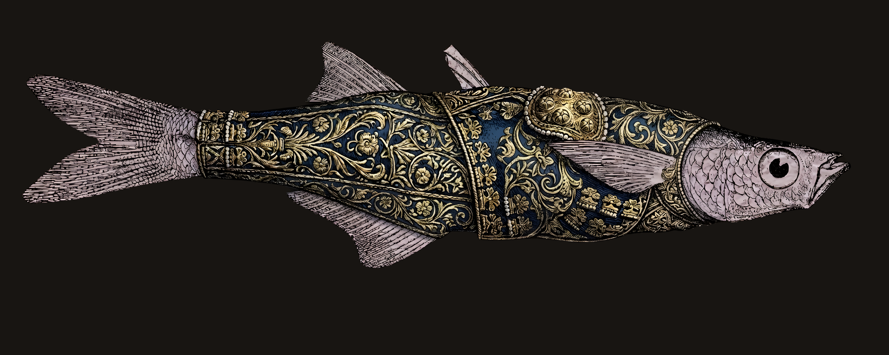

Ana
«Eres tú entre las mujeres bendita...»,
Jorge
«Con un bate de perlas...»,
Ruby
«Tu mirada fuerte zarza...»,
Ardiente
«Alabada seas por las ballenas...»,
Isabela
«el lunar de tu mejilla...»,
Zapotes
Soy zapato y soy araña...
Purísima
Junio, mes de llovizna...
Tuerto
Con el lomo en el petate lloraba un paquidermo...
Charal
Y la cornea se me manchó de pulque...
Argel
Jade, zarco, negro y miel, un rosario parte montes...
Ciruelo
Reloj arrastra el vuelo; segundero morfa a cana.
Santa canela
Yemas que buscan costura en arrugas, campo santo...
Nosotros
Y aquellas alas de cisne al viento, como cortejo…
Baraja
Bajo el cielo de julio, Dios marcaría mi baraja.
Arco
Cuando los dioses tropiezan, y su viento muera parco...
Melina
Melena enmarañada en que, con el lejano claro de luna...
Devoción
Ser un cerro; que el viento de tus pestañas agite un huizache...
Desnudez
Visiones que se esconden bajo lunares imposibles de una renacida piel...
Derviches
La armoniosa obra de una gran voluntad primigenia...
Saprofito
Así un mono viste de seda púrpura y sentado al borde del abismo...
Paimoideo
Mientras vacas desenvuelven el invisible aliado de su agave...
Roca Vírgen
Rasga el talego desbordado de roca virgen, material de tu escultura...
Zapito
Guardo la mesa en la que, de aquella taza, bebía la calidez...
Enraizado Velo
Iza el arco, desgarra el tronco de su vieja ciencia...
Iluso Sentimiento
Aquí, donde no cabe la duda, la angustia, el lenguaje, el amor...
Profanación
Que baje la cruz y descanse a las rodillas faltas de cama...
Amor de Aves
Sería egoísta ponernos nombres, si lo que más nos enamora...
Corazón Perdido
Un corazón arrojado al mar por un cuervo, que con fe se lanzó al abismo...
Última Carta
De aquella sonrisa que impregna mi esencia cuando esta yace en blanco...
Armónico
Y al fin, después de tanto, dejo de herirme la vida...
Secretos del Girasol
La Tierra gira en un espacio mil veces recorrido...
Pureza
Y es justamente en ese colapso cósmico, en esa tan sonada infinidad...
Esperándote
¿Dónde te escondes que no te encuentro? Necesito de ti y sigues escondida...
Ella
La más bella flor del jardín de mis pensamientos, reaviva mis deseos...
Dos locos
Seremos dos locos creando una historia que a nadie más fuera de nosotros...